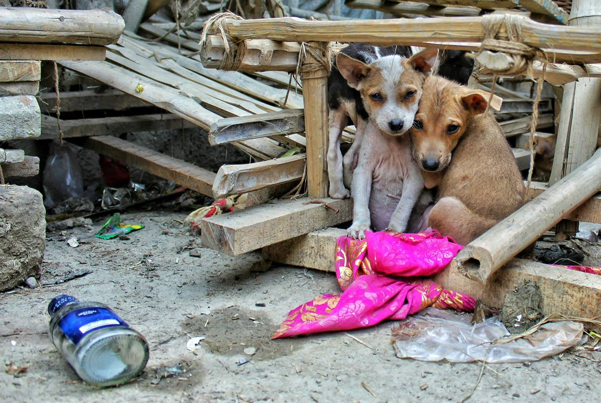
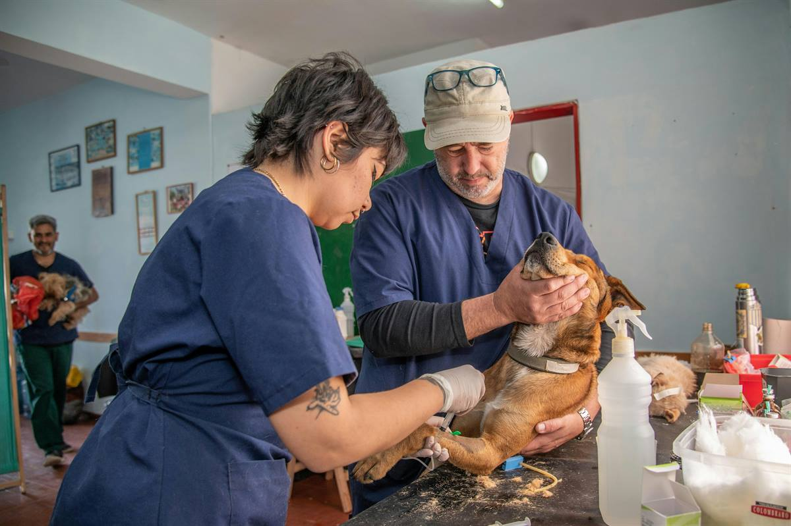
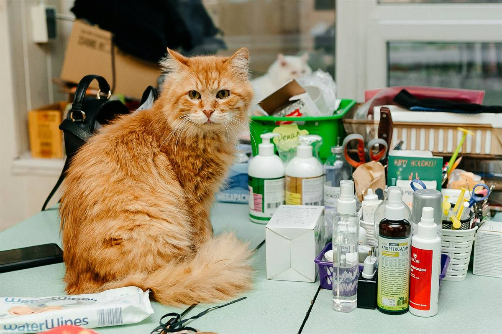
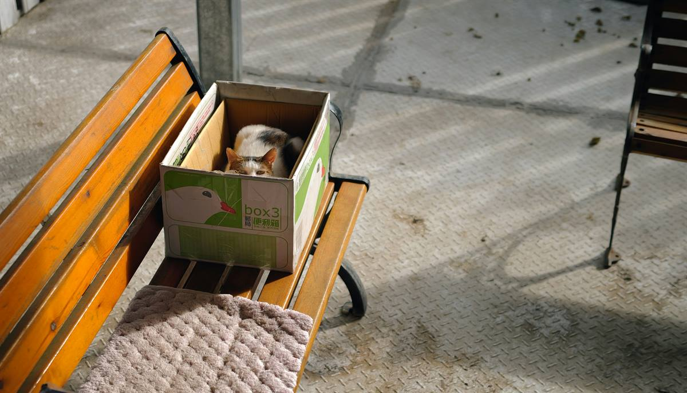
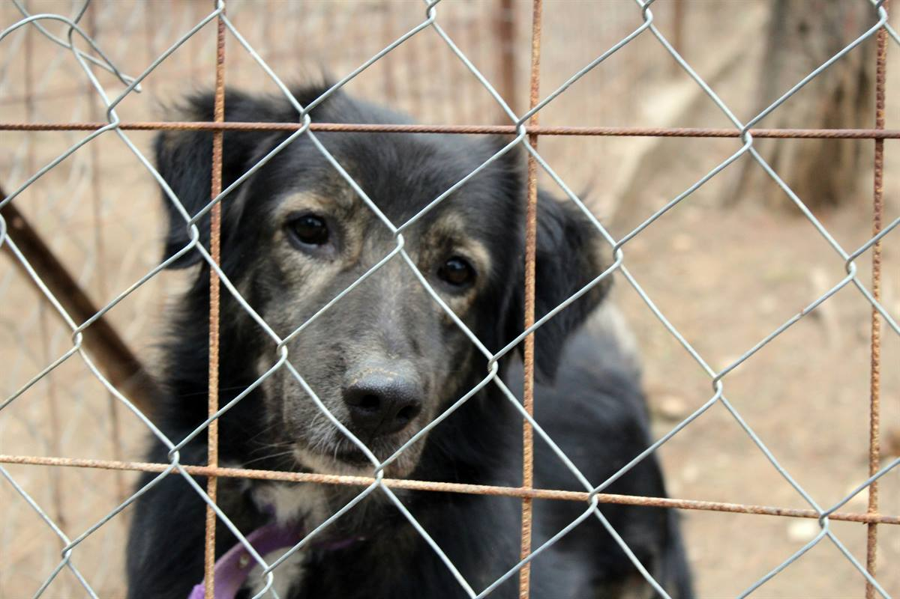

Qué hacemos
Nuestro trabajo son cinco actividades que se encadenan: rescatamos al animal, lo atendemos, lo castramos, lo alojamos en un hogar de tránsito y recién entonces lo damos en adopción.
- Rescate de animales abandonados o en riesgo.
- Atención veterinaria, vacunas y tratamientos.
- Castraciones gratuitas con quirófano móvil.
- Hogares de tránsito mientras el animal se recupera.
- Adopción responsable con seguimiento de seis meses.
Rescate

Recibimos los avisos por teléfono y por redes. Salimos a buscar al animal, lo trasladamos a la veterinaria y abrimos su ficha. En 2025 hicimos 180 rescates.
Atención veterinaria

Antes de ofrecer un animal en adopción lo vacunamos, lo desparasitamos y tratamos lo que haga falta. Los casos abiertos se publican en Atención médica.
Castraciones

Castramos a todos nuestros animales y también a las mascotas del barrio, gratis, con el quirófano móvil. Las fechas están en Castraciones.
Hogares de tránsito

Un hogar de tránsito aloja al animal hasta que esté listo para adopción. Nosotros ponemos el alimento y la veterinaria; la familia pone el lugar y el cariño.
Adopción responsable

Hacemos una entrevista, visitamos la casa y firmamos un acta de adopción. Después seguimos en contacto seis meses. Mirá quiénes esperan en En adopción.
Cómo ser hogar de tránsito
Es la forma de ayudar que más nos cambia el día a día, y no cuesta plata. Estos son los pasos:
- Escribinos desde Contacto eligiendo el motivo «Tránsito».
- Charlamos por teléfono para saber cuánto espacio tenés y cuánto tiempo podés sostenerlo.
- Visitamos tu casa para ver que sea segura: rejas, balcones y patio cerrado.
- Te asignamos un animal según tu disponibilidad y si ya tenés otras mascotas.
- Te llevamos al animal con su alimento, su manta y su carnet de vacunas.
- Quedás en contacto con el equipo veterinario por cualquier urgencia, las 24 horas.
- Cuando aparece una familia adoptante, coordinamos la entrega con vos.
Si no podés recibir un animal en tu casa, también ayuda mucho asociarte: con las cuotas pagamos el alimento y los tratamientos.